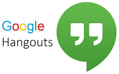
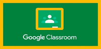
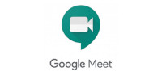

Caesarex 's Website
Software, Tutoriales, y más ...
Software, Tutoriales, y más ...
Blog
Herramientas Electrónicas para la educación a Distancia contra el COVID-19
En este post encontrarás algunas aplicaciones y plataformas que funcionan mediante Internet para lograr llevar a cabo el proceso de enseñanaza-aprendizaje de manera "no presencial" ó "a distancia" ya que se hace necesario mantener esa comunicación del docente con su estudiante a pesar de la contingencia. El orden de las herramientas virtuales listadas aquí, no tiene nada que ver con su efectividad.
Telegram
Es una aplicación de mensajería instantánea para dispositivo móvil que tiene por objeto lograr la comunicación por medio de mensajes y multimedia de manera individual o en grupo (similar a Whatsapp), pero con algunas ventajas muy interesantes:
- Es de uso gratuito, puedes descargarla de las respectivas tiendas virtuales.
- Está basado en la nube, lo que significa que puedes utilizarlo en cualquier dispositivo: celular, tableta, computadora etc.
- Puedes compartir archivos de hasta 1.5 Gigabytes, lo que significa que puedes enviar vídeos de gran duración en el chat, películas enteras.
- Puedes utilizar Bots, que son pequeñas aplicaciones que puedes utilizar dentro de la app de Telegram.
- La privacidad: No es necesario compartir un número telefónico para establecer la comunicación, basta con un nombre de usuario. Además puedes crear chats "secretos" que se autodestruyen después de cierto tiempo (el tiempo es configurable).
- Puedes crear Canales, son chats grupales pero a diferencia de los grupos convencionales, solo el administrador puede emitir mensajes y los demás son solo receptores. Ideal para las clases.
- Puedes crear encuestas grupales y la capacidad de usuarios soportados en los grupos y canales, son muy superiores a los de la competencia.
Visitar: Telegram
Google Hangouts
Es una aplicación muy sencilla de mensajería instantánea de Google, que básicamente sirve para enviar texto e imágenes por medio del chat, la comunicación puede ser individual o grupal y las ventajas de esta app son:

- Es de uso gratuito, puedes descargarla de las respectivas tiendas virtuales.
- La mayoría de usuarios de android ya tienen esta app preinstalada y lista para usar en sus dispositivos, ya que es necesario que vinculen una cuenta de correo electrónico de google.
- Se pueden realizar videollamadas siempre que el dispositivo: computadora o smartphone, cuenten con micrófono y cámara.
Visitar: Google Hangouts
Edmodo
Esta es una plataforma de e-learning o de aprendizaje electrónico muy básica; pero muy sencilla de utilizar, es como un aula de clases virtual. El diseño es muy parecido a un "Facebook educativo".Lo mejor es que el uso de esta plataforma es gratuita para todos.
El docente puede:
- Crear aulas virtuales, inscribir alumnos en esa aula o compartir un código para que el mismo alumno se inscriba solo.
- Colocar actividades para los alumnos (multimedia, texto, video, audio, documentos) que podrán ser evaluadas y retroalimentadas después de su entrega por el alumno.
- Crear evaluaciones o exámenes de opción múltiple, de respuesta corta o relacionar columnas y que se evalúan instantáneamente.
- Se pueden crear periodos de evaluación (parciales o módulos) para segmentar las calificaciones.
El alumno puede:
- Entregar sus asignaciones multimedia desde cualquier dispositivo.
- Realizar preguntas o comentarios al docente.
- Recibir retroalimentación del docente.
- Consultar en todo momento sus calificaciones y su progreso en el curso virtual.
Visitar: Edmodo
Google Classroom
Esta es una plataforma de e-learning o de aprendizaje electrónico de Google, pueden acceder tanto docentes como alumnos con su cuenta de google que al igual que Hangouts la mayoría de usuarios de android ya la tienen instalada. El manejo es muy intuitivo y similar a Edmodo, también es de uso gratuito en muchos países incluido México.
El docente puede:
- Crear aulas virtuales, inscribir alumnos en esa aula o compartir un código para que el mismo alumno se inscriba solo.
- Colocar actividades para los alumnos (multimedia, texto, video, audio, documentos) que podrán ser evaluadas y retroalimentadas después de su entrega por el alumno.
- Crear evaluaciones o exámenes de opción múltiple, respuesta corta o relacionar columnas y que se evalúan instantáneamente.
- Chatear con los alumnos en tiempo real. (en Edmodo no se puede aún.)
- Ponderar calificaciones para crear evaluaciónes sumetivas.(en Edmodo no se puede aún.)
El alumno puede:

- Entregar sus asignaciones multimedia desde cualquier dispositivo.
- Realizar preguntas o comentarios al docente.
- Recibir retroalimentación del docente.
- Consultar en todo momento sus calificaciones y su progreso en el curso virtual.
Visitar: Google Classroom
Zoom
Es una plataforma de videoconferencia, ideal para que docentes y alumnos logren sincronizarse en un mismo tiempo pero en diferentes lugares para una clase virtual, el docente puede videograbarse en zoom y los estudiantes pueden verlo y chatear con el, hacer comentarios o participaciones en vivo, como si estuvieran platicando uno frente al otro. También es posible grabar las sesiones en video para su posterior consulta.
Es necesario que todos los participantes descarguen la aplicación virtual de Zoom, ya sea la versión de escritorio para las PC, o las apps para dispositivo móvil que pueden ser descargadas desde las respectivas tiendas virtuales.
Zoom permite utilizar sus servicios de videoconferencia de forma gratuita pero solamente durante un tiempo limitado, actualmente son 40 minutos. Despúes de ese tiempo, Zoom termina la reunión y es necesario que el administrador (profesor), inicie otra nueva reunión, y los usuarios vuelvan a ingresar. Si se desea quitar esta limitante, es necesario pagar una suscripción.
Visitar: Zoom
Google Meet
 Es una plataforma de videoconferencia en la nube, muy similar a zoom. Cualquier persona con una cuenta de google puede iniciar una reunión virtual y compartirla para que otros usuarios se conecten. A diferencia de Zoom, actualmente Meet es de uso gratuito y no presenta limitantes de tiempo en su servicio. Permite grabar las sesiones en video para su posterior consulta.
Si deseas utilizar Meet en tu computadora, puedes acceder directamente desde un navegador; pero, si deseas acceder con algun dispositivo móvil, es necesario descargar la app de Meet, desde la tienda virtual que corresponda.
Visitar: Google Meet
Autor: Caesarex - 05 de Agosto de 2020
<- Siguiente Post Post Anterior ->